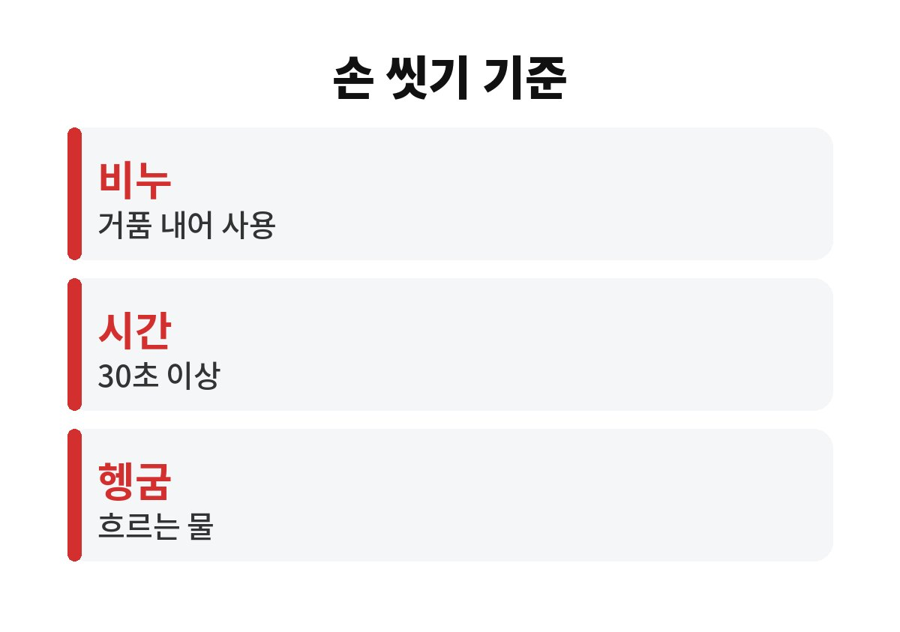
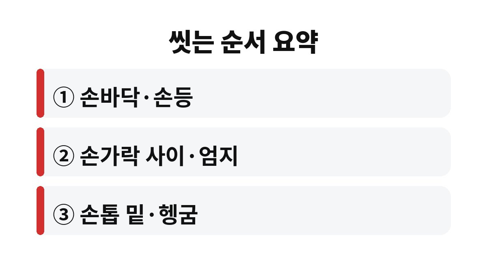

아이 손 씻기는 비누를 묻혀 손바닥부터 손톱 밑까지 30초 이상 문지른 뒤 흐르는 물에 헹구는 것이 기준이다.
물만 스치듯 묻히고 나오는 아이가 많은데, 시간이 모자란 것보다 문지르는 곳이 비어 있는 경우가 흔하다.
질병관리청이 안내하는 손 씻기 6단계를 아이 눈높이에 맞춰 어떻게 알려 줄지 적었다.
손에 묻은 세균은 물만으로는 잘 떨어지지 않는다.
비누 거품이 손 표면의 때와 기름기를 풀어 주고, 흐르는 물이 그것을 씻어 낸다.
그래서 비누 없이 물에만 담갔다 빼는 것은 씻은 것으로 치기 어렵다.
손 소독제는 물과 비누를 쓸 수 없을 때 쓰는 보조 수단이다.
손에 흙이나 음식물이 눈에 보일 때는 비누로 씻는 쪽이 먼저다.
어린 아이는 손을 입에 가져가는 일이 잦으니 소독제를 쓸 때는 어른이 곁에서 양을 맞춰 주고 마를 때까지 지켜본다.
30초는 생각보다 길다.
아이에게 숫자를 세라고 하면 10초도 못 채우고 끝낸다.
생일 축하 노래를 처음부터 끝까지 두 번 부르면 얼추 맞는다고 알려 주는 방법이 널리 쓰인다.
세 가지 오해는 모두 시간을 아끼려는 마음에서 나온다.
아이는 놀이를 멈추고 세면대까지 가는 것 자체가 귀찮고, 부모는 매번 지켜보기가 벅차다.
그래서 기준을 한 번에 다 요구하지 않고 비누와 30초부터 정하는 쪽이 오래 간다.
놀이터에서 돌아온 아이가 현관에서 신발을 벗자마자 간식부터 달라고 하는 장면을 떠올려 본다.
이때가 손을 씻어야 하는 가장 대표적인 순간이다.
아래 표는 씻어야 하는 상황과 아이가 자주 빠뜨리는 부위를 짝지은 것이다.
손을 씻어야 하는 순간은 하루에 생각보다 많다.
어린이집이나 학교에서는 급식 전과 화장실 뒤에 줄을 서서 씻는 일이 많아 시간이 빠듯하다.
집에서 순서를 한 번 익혀 두면 기관에서도 같은 순서로 씻기 쉽다.
손바닥만 비비고 끝내는 습관은 대개 손가락 사이와 엄지, 손톱 밑이 비는 것으로 이어진다.
| 씻는 순간 | 이유 | 자주 빠뜨리는 곳 |
|---|---|---|
| 밖에서 돌아온 직후 | 문손잡이·놀이기구에 닿은 손 | 손가락 사이 |
| 밥과 간식 먹기 전 | 손에 묻은 것이 입으로 들어감 | 엄지 둘레 |
| 화장실 다녀온 뒤 | 배설물 접촉 가능성 | 손톱 밑 |
| 코를 풀거나 기침을 가린 뒤 | 분비물이 손에 남음 | 손등 |
| 동물·흙을 만진 뒤 | 흙과 털에 묻은 오염 | 손목 근처 |

순서는 어른이 먼저 옆에서 같이 해 보이는 것이 빠르다.
말로만 설명하면 아이는 손바닥만 비비고 끝낸다.
세면대 높이가 낮아 손이 닿지 않으면 발판을 두어 소매가 젖지 않게 걷어 올려 준다.
세면대 옆에 순서를 그림으로 붙여 두면 아이가 다음 동작을 스스로 찾는다.
거품을 낼 때 흥얼거릴 짧은 노래를 정해 두면 시간을 재촉하지 않고도 30초가 채워진다.
잘 씻었는지는 손을 펴서 같이 보고, 비누 냄새가 나는지 맡아 보게 하면 아이가 결과를 느낀다.
혼내거나 다그치면 씻는 일 자체를 피하게 되니 빠뜨린 곳만 짚어 주고 다시 한 번 하게 한다.
형제가 있으면 순서대로 시간을 재 주는 역할을 번갈아 맡기는 것도 방법이다.
다만 아이의 기질에 따라 노래를 싫어하는 경우도 있어서 모래시계나 타이머가 더 잘 맞는 집도 있다.

물을 무서워하거나 거품 감촉을 싫어하는 아이가 있다.
이런 아이에게 30초를 한 번에 채우라고 하면 씻는 일 자체가 싸움이 된다.
처음에는 손바닥과 손등 두 단계만 하고 헹구게 한 뒤, 며칠 간격으로 한 단계씩 늘리는 편이 덜 부딪힌다.
어린 영아는 스스로 씻기 어려우므로 어른이 아이 손을 잡고 같은 순서로 씻겨 준다.
손가락을 빠는 시기에는 씻은 직후에도 다시 입으로 가기 쉬워서 횟수를 늘리기보다 장난감과 바닥을 자주 닦아 주는 쪽이 현실적이다.
씻는 습관이 잡히지 않는다고 아이의 성향이나 부모의 방식을 탓할 일은 아니다.
발달이나 감각 문제가 걱정되면 소아청소년과나 지역 보건소에 물어보는 것이 맞다.
이 방법은 건강한 피부의 아이를 기준으로 한 것이다.
손이 자주 갈라지거나 습진이 있는 아이는 비누 자극으로 더 따가워할 수 있다.
이럴 때는 비누 종류를 바꾸기 전에 소아청소년과에서 피부 상태를 먼저 보여 주는 것이 빠르다.
오늘은 귀가 직후 한 번만 같이 30초를 세어 보면 된다.
참고 자료: 질병관리청 「올바른 손 씻기 6단계 안내」(2026년 11월 확인)
※ 2026년 기준 공식 자료를 바탕으로 정리한 일반 정보이며, 아이의 발달이나 건강에 걱정이 있다면 소아청소년과 등 전문가와 상담하길 바란다.